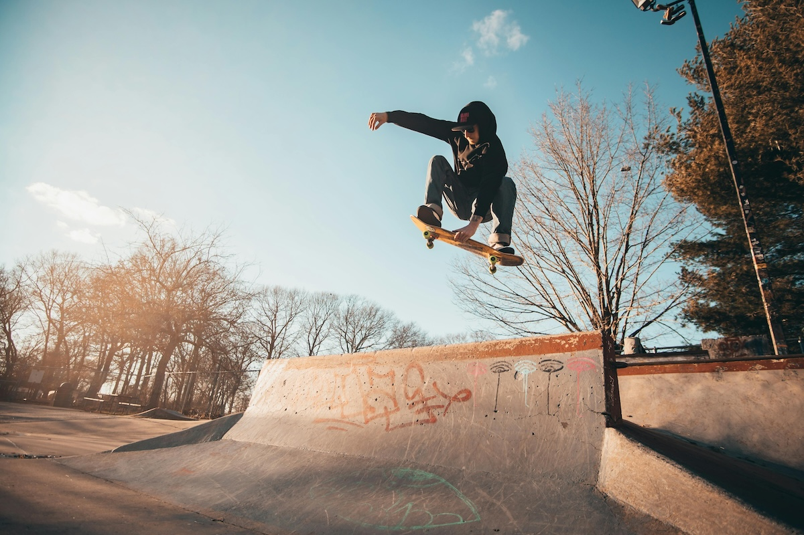

Hareketi Dondurmak: Fotoğrafçılıkta Anı Yakalayın
Fotoğrafçılıkta hareketi dondurmak, hızlı anları net ve keskin bir şekilde yakalamak isteyenler için önemli bir tekniktir. İster spor, ister vahşi yaşam, isterse günlük hayattaki hareketli anları çekmek isteyin, doğru ayarları bilmek büyük fark yaratır. İşte hareketi dondurmak için bilmeniz gerekenler:
1. Enstantane Hızını Artırın
Hareketi net bir şekilde yakalamanın en etkili yolu, enstantane hızını yükseltmektir. Hareketin hızına bağlı olarak 1/500, 1/1000 veya 1/2000 gibi yüksek enstantane değerleri kullanabilirsiniz. Özellikle spor veya kuş fotoğrafçılığı gibi hızlı hareketleri çekiyorsanız, enstantane hızınızı olabildiğince artırmanız gerekir. Daha hızlı objeler için 1/4000 veya daha üstü hızlar bile gerekebilir.
2. ISO Değerini Dengeli Kullanmak
Enstantane hızını artırırken ışık miktarı azalacağından ISO değerini yükseltmek gerekebilir. Ancak, ISO çok yüksek olursa fotoğrafta kumlanma (gürültü) oluşabilir. Bu yüzden mümkün olduğunca düşük tutarak dengeli bir ışık ayarı yapmalısınız. Düşük ışık koşullarında, modern kameraların sunduğu yüksek ISO performansını test ederek, en uygun dengeyi yakalayabilirsiniz.
3. Diyaframı Açın
Hızlı bir enstantane ile çekim yaparken yeterli ışık almak için diyaframı açmak gerekir. f/2.8 veya f/4 gibi geniş diyafram açıklıkları, daha fazla ışık almanıza ve enstantane hızınızı yüksek tutmanıza yardımcı olur. Ancak geniş diyafram açıklıkları alan derinliğini de azaltır, bu nedenle konuya doğru netleme yapmak kritik öneme sahiptir.
4. Sürekli (Seri) Çekim Modunu Kullanın
Bazı anlar göz açıp kapayıncaya kadar geçebilir. Bu yüzden kameranızı seri çekim moduna (burst mode) alarak, aynı anda birden fazla kare yakalayabilirsiniz. Böylece en iyi anı seçme şansınız artar. Özellikle spor veya aksiyon fotoğrafçılığında bu teknik oldukça etkilidir.
5. Otomatik Netleme (AF) Modlarını Ayarlayın
Hareketli nesneleri takip edebilmek için sürekli netleme (AI Servo/AF-C) modunu kullanabilirsiniz. Bu mod, nesnenin hareketini takip eder ve netlemeyi sürekli günceller, böylece daha keskin kareler elde edersiniz. Daha hızlı hareket eden nesnelerde, AF noktalarını manuel olarak belirleyerek daha iyi sonuçlar alabilirsiniz.
6. Doğru Lens Seçimi
Hareketli nesneleri çekerken odak uzaklığı büyük önem taşır. Spor veya vahşi yaşam fotoğrafçılığı yapıyorsanız, hızlı odaklanabilen telefoto lensler (70-200mm veya 100-400mm gibi) işinizi kolaylaştırır. Geniş diyafram açıklığına sahip lensler de düşük ışıkta daha iyi sonuçlar almanızı sağlar. Sabit odak uzaklığına sahip lensler genellikle daha hızlıdır ve netlik açısından avantaj sağlar.
7. Işığı Doğru Kullanın
Doğal ışıkla çalışıyorsanız, günün en aydınlık saatlerinde çekim yaparak enstantane hızınızı artırabilirsiniz. Eğer yapay ışık kullanıyorsanız, flaş veya sürekli ışık kaynakları ile hareketi dondurabilirsiniz. Harici flaş kullanırken, yüksek hızlı senkronizasyon (HSS) özelliğini etkinleştirerek enstantane hızınızı düşürmeden hareketi dondurabilirsiniz.
8. Pan Tekniğini Deneyin
Eğer hareketi tamamen dondurmak yerine, hareket hissini vermek istiyorsanız pan tekniğini kullanabilirsiniz. Pan tekniği, hareketli nesneyi takip ederek çekim yapmayı içerir ve böylece arka planı bulanıklaştırırken nesneyi net tutabilirsiniz. Bunun için enstantane hızınızı biraz düşürerek (örneğin 1/60 veya 1/125) konuyu takip ederek çekim yapmalısınız.
9. Deklanşör Tepki Süresini Azaltın
Kameranızın deklanşör gecikmesini minimize etmek için ön odaklama yapabilirsiniz. Deklanşöre yarım basarak konuyu önceden netleyip, tam basarak çekim yapmak, en doğru anı yakalamanıza yardımcı olur.
Sonuç
Hareketi dondurmak, teknik bilgi ve pratik gerektiren bir konudur. Doğru enstantane, ISO ve diyafram ayarlarını kullanarak ve sürekli netleme modlarını aktif ederek, keskin ve etkileyici kareler elde edebilirsiniz. Biraz deneme-yanılma ile mükemmel sonuçlara ulaşabilirsiniz! Unutmayın, farklı senaryolarda ayarları test etmek ve sürekli pratik yapmak, yeteneklerinizi geliştirmenin en iyi yoludur.
Siz de hareketi dondurarak çektiğiniz fotoğrafları paylaşmak ister misiniz? Deneyimlerinizi yorumlarda bizimle paylaşın!